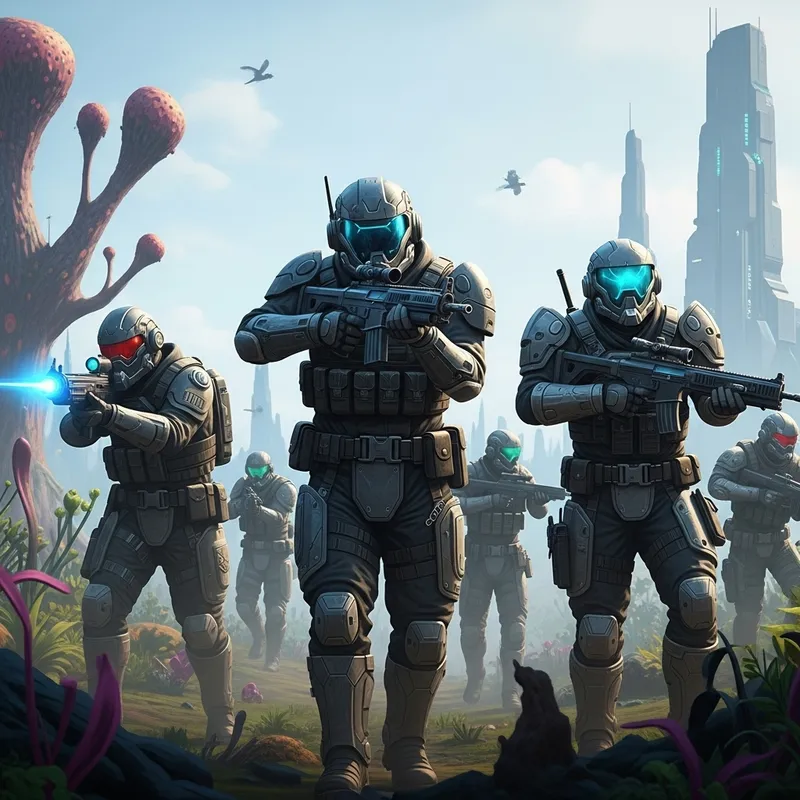
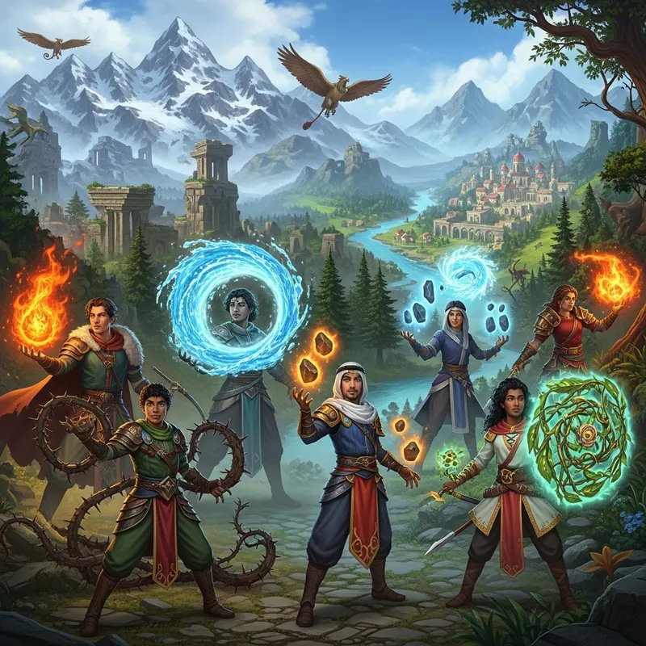
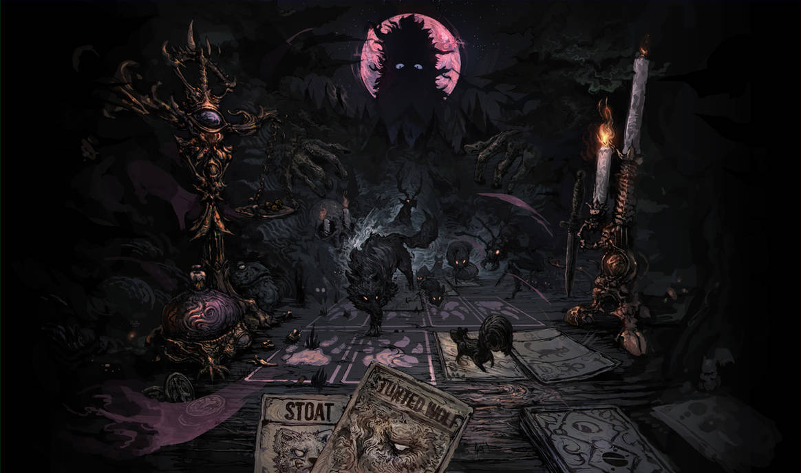

Products
Frontierfall

Description:
Frontierfall is a squad-based sci-fi action game set on a newly discovered alien world where humanity’s first foothold is already starting to crumble.
You play as part of an elite expeditionary unit deployed to secure and explore an uncharted planet rich in valuable resources and dangerous unknowns. What begins as a standard military operation quickly becomes a fight for survival as hostile forces, alien ecosystems, and internal fractures within the mission threaten everything.
Combat blends tactical gunplay with environmental awareness. Strange flora reacts to movement and sound. Alien wildlife can be avoided, studied, or weaponized. Every mission pushes deeper into the frontier, where towering megastructures hint that this world was never truly empty.
Between missions, players manage squad loadouts, make strategic decisions that affect the campaign, and uncover fragments of a larger mystery:
Who was here before and why did they leave?
Circle of the Shattered Vale

Description:
Circle of the Shattered Vale is a party-based fantasy RPG set in a land where magic is not a single force, but many, each one tied to culture, tradition, and belief.
You lead a band of six adventurers, each wielding a distinct form of magic: flame, storm, earth, spirit, nature, and time. Once united under an ancient magical order known as the Circle, these disciplines are now divided, their harmony broken after a long-forgotten calamity.
As the Vale begins to fracture, rifts opening, ruins awakening, and old powers stirring, you must travel across a richly varied world of forests, rivers, ruined cities, and mountain strongholds to reunite the Circle or reshape it entirely.
Combat blends tactical positioning with spell synergy. Combining elements creates powerful effects: fire feeds windstorms, nature binds enemies for arcane blasts, time magic alters turn order and fate itself. Outside of battle, player choices influence alliances, reshape regions, and determine how magic will exist
in the world going forward.
This is a story about balance, legacy, the cost of powerand whether
unity is worth the sacrifices it demands.
Blackwood Table

Description:
Blackwood Table is a dark roguelike card game where survival depends on knowledge, sacrifice, and restraint.
You are drawn to a candlelit table deep within a shifting, corrupted forest, a place where cards are not tools, but living symbols of beasts, curses, and forgotten gods. Each run is a ritual. Each hand dealt is a test of will.
Players build a deck from grim creature cards, unstable relics, and forbidden sigils, battling twisted manifestations of the forest that emerge from the shadows. Creatures can be captured, enhanced, or consumed but every choice feeds something watching from beyond the table.
Between encounters, you must make uneasy bargains:
Burn a card to gain power.
Spare a creature to alter fate.
Lose part of yourself to survive the night.
The world changes with every failure. Rules shift. The deck remembers.
And the presence behind the veil grows more aware of you
This is not a game about winning.
It is a game about lasting just a little longer.
Where to find our games steam
Xbox
playstation